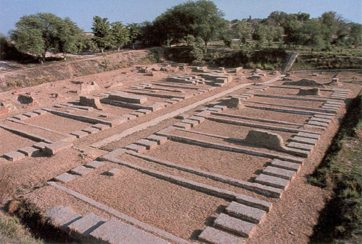

<div class="portfolio-single-load clearfix">
    <div class="custom-full-width-box">
        <div class="custom-container">
            <div class="custom-row align-items-center">
                <div class="custom-image-column">
                    
                </div>
                <div class="custom-text-column">
                    <h2 class="custom-heading">Harappa</h2>
                    <p class="custom-paragraph">
                        Situated in the Punjab province, Harappa is one of the major urban centers of the ancient Indus Valley Civilization. Excavated in the 1920s, Harappa offers valuable insights into the lifestyle, architecture, and culture of one of the world's earliest civilizations. Visitors can explore the archaeological site, marvel at the well-planned city layout, and discover artifacts such as pottery, seals, and jewelry that provide clues to the civilization's achievements and daily life. As a UNESCO World Heritage Site, Harappa continues to intrigue archaeologists, historians, and tourists, offering a fascinating journey through time to explore the origins of human civilization in South Asia.

                    </p>
                </div>
            </div>
        </div>
    </div><!-- .custom-full-width-box end -->

</div><!-- end single-project -->
